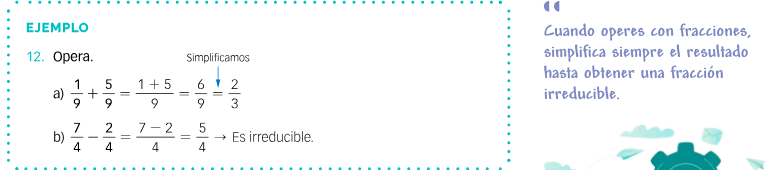
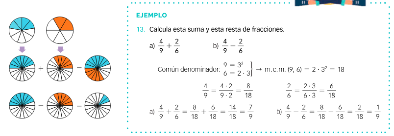

Ya estamos preparados para realizar operaciones con fracciones. Como en los números enteros, la suma y resta es más difícil que la multiplicación y división. Aunque ya que sabemos "reducir fracciones a común denominador" : por tanto, el camino está ya medio hecho.
Suma y resta de fracciones.
Veremos la suma y resta en dos casos:
Suma y resta de fracciones con igual denominador
Para sumar (o restar) fracciones con el mismo denominador se suman (o se restan)n los numeradores y se mantiene el mismo denominador.
Veamos el ejemplo siguiente:

Ed Santillana página 68 1º de ESO. Suma y resta con mismo denominador
Suma y resta de fracciones con distinto denominador
Para sumar (o restar) fracciones con distinto denominador:
1º se reducen todas ellas a común denominador.
2º Se suman o restan los numeradores, manteniendo el mismo denominador. Acorados de simplificar hasta obtener la fracción irreducible.
Veamos el siguiente ejemplo:

Grazalema Santillana 1º de ESO página 68. Suma y resta de fracciones con distinto denominador.
Ahora te toca a tí
Vamos a realizar los ejercicios de las páginas 68 y 69 (del 37 al 44).
¿Quién se atreve a salir a la pizarra?
Para los que acabéis pronto, podéis practicar jugando: